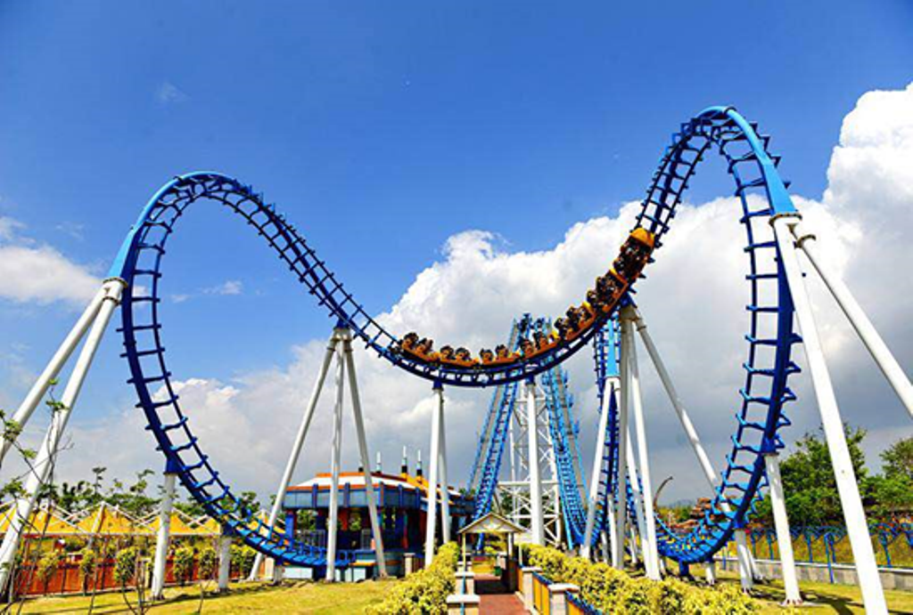
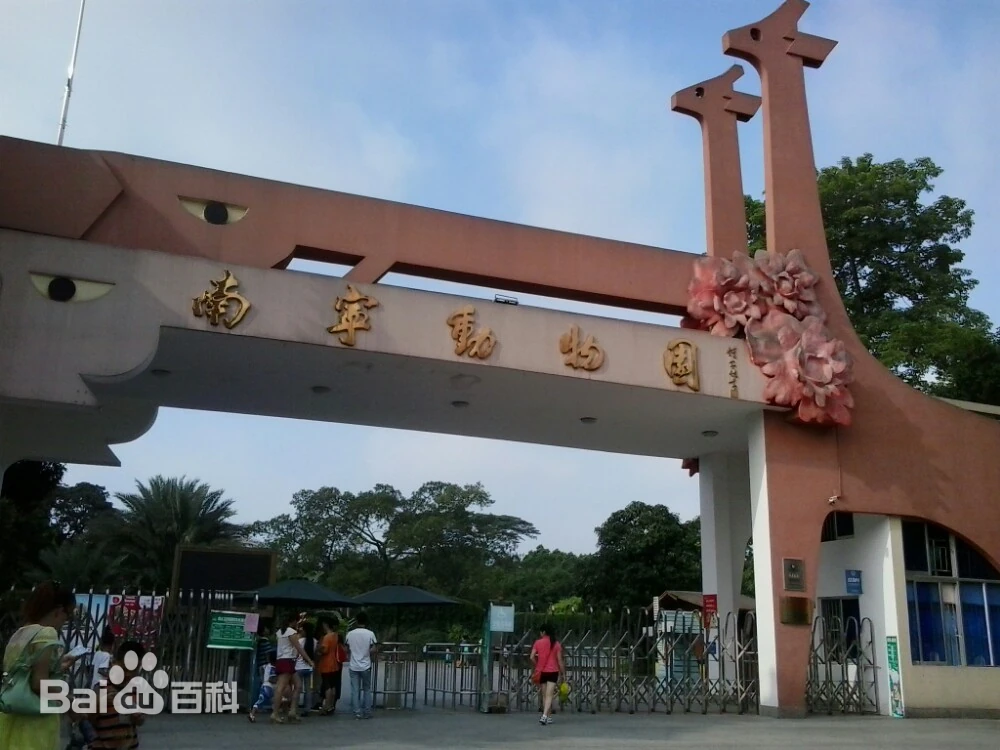
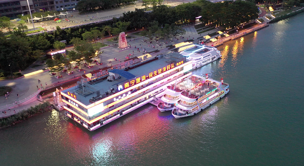
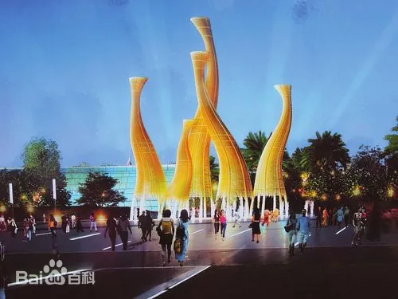
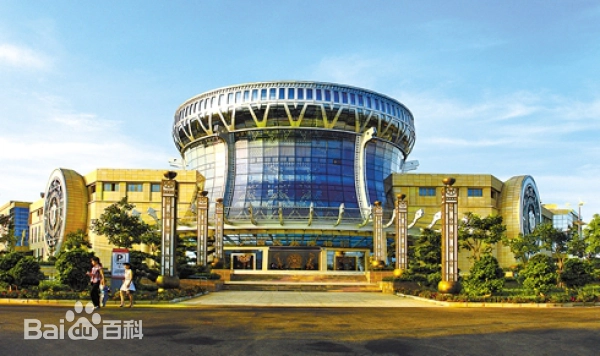
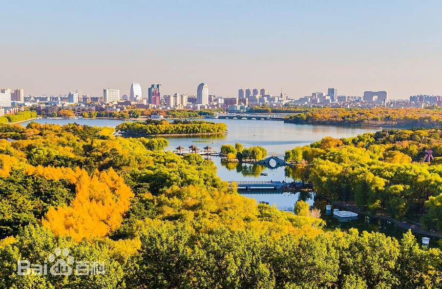
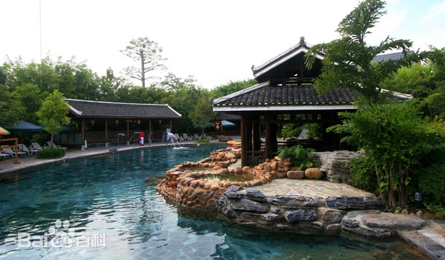

|

南宁方特东盟神画南宁方特东盟神画是深圳华强方特文化科技集团继方特欢乐世界、方特梦幻王国、方特水上乐园、方特东方神画之后， 打造的又一个全新的大型高科技主题乐园，也是目前展示东盟十国文化的主题乐园。 >>> |
|---|
|

南宁动物园南宁动物园位于南宁市西乡塘区大学西路3号，也叫西郊公园，这里自然环境优美，非常适合带孩子来踏青或是看动物。 在这里不仅可看到黑叶猴、犀鸟、大熊猫、白虎、双峰骆驼等珍稀动物，还可体验各种游乐设施和水上乐园。 游乐园就在动物园内，还有刺激的大摆锤、跳楼机和过山车，有兴趣的话可以去尝试一下。 >>> |
|

邕江夜游邕江夜游是南宁市新的水上旅游项目，带来全新的水上游玩体验。 配备有一艘57米长，17米宽，上建三层的趸船，一层为候船大厅，二、三层为游客休闲娱乐餐饮区域； 两艘120客位的旅游船，一层为80座大厅，二层配备4个观景包厢，三层为观景甲板。 旅游船配套设施齐全，舒适宽敞，视野广阔，游客可以在徐徐江风中，欣赏邕江秀美景色，聆听南宁历史文化故事。 >>> |
|

五象湖公园南宁市五象湖公园，规划以“水城故事，源远流长，与时俱进，文化引领”为核心理念，展现我市水映山灵、锦绣绿城的城市新形象。 园中设置百树园、百花园、百草园、百趣园来诠释当代广西“八桂神韵，绿色乐章”的内涵，同时结合公园的特色旅游线路，营造各区域不同的植物景观特色。 >>> |
|

广西民族博物馆广西民族博物馆位于南宁市青秀山风景区青环路11号，占地130亩，建设总投资约2.5亿元，附属广西传统民居建筑露天展示园，是以广西民族文化为专题的博物馆。 现为国家一级博物馆、全国文明单位、全国民族团结进步教育基地、全国爱国主义教育示范基地、全国中小学生研学实践教育基地、全国关心下一代党史国史教育基地、第一批全国科普教育基地和国家AAAA级旅游景区。 >>> |

南宁极地海洋世界南宁极地海洋世界位于南宁市江南区沙井大道39号融晟天河海悦城C1栋。 整座场馆设有：儿童水上乐园、5D环幕影院、海底隧道、鲨鱼领地、水母宫、企鹅园地、海龟岛、美人鱼剧场、海洋欢乐剧场、海豹湾、鲸豚之海、鳄鱼湾等18个主题游览区域。 海豚表演、海狮表演、美人鱼表演、黄金风暴、水中芭蕾、蓝色之恋等6大表演类节目 >>> |
南宁大明山大明山亦称大鸣山，地处广西中部，分布于武鸣区、上林县、马山县、宾阳县四个区县，北回归线从中部穿过。 呈西北—东南走向，长约62公里，宽18公里，一般海拔约1000米，主峰龙头山海拔1785米，位于山体的中部、武鸣和上林两县的交界处附近的上林境内，是广西中西部的最高点。 >>> |
|

南湖公园南宁南湖公园，位于市区东南面青秀区，是一个融水体景观，亚热带园林风光于一体的公园。 占地93万多平方米的南湖湖面明净如镜，碧波潋滟。南湖原为邕溪，本与邕江相连通，每当邕江发洪水时，江水就倒灌到溪中，将大量农田、房舍淹没。 >>> |
|

九曲湾温泉九曲湾温泉度假村位于南宁市三塘镇，坐落在风光秀丽的九曲湾农场，是一个以温泉生态旅游为主轴， 融游览、观光度假、休闲娱乐、康体疗养、酒店、会议、文化、地产开发等经营项目于一体， 具有浓郁民族风情和地方特色的温泉旅游度假胜地。 >>> |

大美广西 荣华南宁
welcome to Nanning|南宁欢迎您！